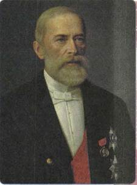
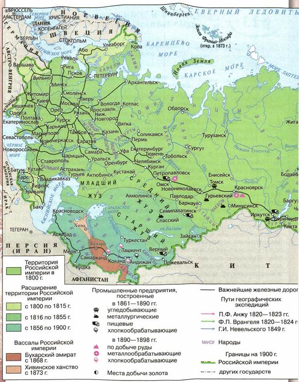
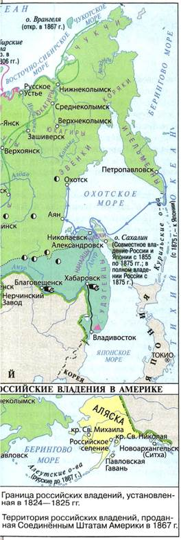
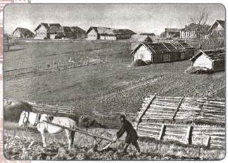
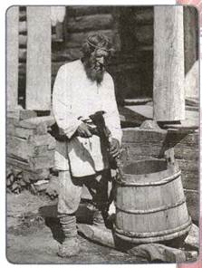
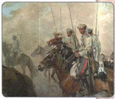
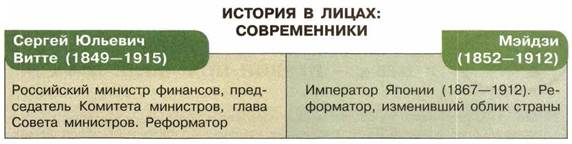

Каковы причины успехов в экономическом развитии конца XIX в.? Как изменилось положение основных сословий российского общества во второй половине XIX в.?
1. Основные цели экономической политики Александра III. Деятельность Н. X. Бунге
Стремление Александра III упрочить величие Российской империи было немыслимо без создания мощной экономики.
В мае 1881 г. пост министра финансов занял видный учёный-экономист Н. X. Бунге. Он был сторонником ускорения экономического роста, но выступал против прямого финансирования промышленности государством. Главную задачу властей Бунге видел в издании законов, благоприятных для развития экономики.
На первое место Бунге поставил задачу реформирования налоговой системы. Министр выступил за уменьшение налогового обложения крестьян, провёл снижение выкупных платежей и начал постепенную отмену подушной подати.
Чтобы возместить потери от этих мер и увеличить доходы государства, Бунге существенно повысил налоги на землю, городские строения, денежные капиталы, золотодобывающую промышленность. Он ввёл налоги на наследство и на заграничные паспорта. При нём выросли акцизы на водку, табак, сахар. Были повышены таможенные пошлины на товары, ввозимые из-за границы. Только за три года, с 1882 по 1885 г., они выросли более чем на 30 %.
На посту министра финансов Бунге сделал многое для поощрения частного предпринимательства.
Правительство содействовало росту промышленности и в целях укрепления военной мощи государства. Одновременно оно осуществило значительное сокращение армии, что приносило в бюджет дополнительно 23 млн рублей в год. Однако ликвидировать превышение расходов государства над его доходами Бунге так и не удалось.

Н. X. Бунге
2. Экономическая политика И. А. Вышнеградского и С. Ю. Витте
1 января 1887 г. Н. X. Бунге ушёл в отставку. Его пост занял И. А. Вышнеградский, профессор практической механики, крупный изобретатель, финансист. Своей главной задачей он считал нормализацию денежного обращения. С этой целью Министерство финансов накапливало большие суммы, а затем принимало активное участие в сделках на зарубежных биржах. В результате покупательная способность рубля значительно повысилась.


Российская империя в XIX в.
При Вышнеградском вывоз российских товаров за границу превышал ввоз в страну зарубежных изделий.
Вышнеградский более энергично, чем Бунге, выступал за непосредственное участие государства в хозяйственной деятельности и особенно в создании благоприятных условий для частного предпринимательства. Кроме того, экономическая программа Вышнеградского предусматривала привлечение в Россию иностранных капиталов, пересмотр оплаты железнодорожных перевозок, введение винной монополии. Вышнеградскому удалось не только ликвидировать разницу между доходами и расходами государства, но и добиться некоторого превышения доходов над расходами. При нём был создан золотой запас в размере свыше 500 млн рублей.
1890-е годы стали периодом небывалого роста русской промышленности. За десятилетие промышленное производство в стране удвоилось, а выпуск продукции тяжёлой промышленности увеличился в три раза. Особенно быстрыми темпами развивались отрасли хозяйства, связанные с новыми видами топлива — углем и нефтью.
Курс Бунге и Вышнеградского в основных чертах продолжил С. Ю. Витте (министр финансов в 1892—1903 гг.). Но в отличие от своих предшественников, полагавших, что за экономическими переменами должна последовать политическая модернизация, Витте считал важным сохранение самодержавия.
В 1891 г. началось строительство Транссибирской магистрали, связавшей европейскую часть России с Сибирью и Дальним Востоком. С 1893 г. после нескольких лет относительного затишья страна переживала новый, ещё более мощный подъём железнодорожного строительства. Правительство активно скупало частные железные дороги, создавая единую транспортную сеть страны.
Работаем с картой
Найдите на карте районы развития металлургии и нефтяной промышленности, важнейшие железнодорожные линии.
3. Сельское хозяйство
Сельское хозяйство, которое оставалось основой российской экономики, активно втягивалось в рыночные отношения. Однако его рост сдерживало сохранение помещичьего землевладения и крестьянской общины.
Обнищание крестьян заставляло помещиков переходить к приобретению собственного инвентаря и найму вольных работников. Капиталистическая система хозяйствования преобладала в Прибалтике, на западе, юго-западе, юге, а также в Петербургской, Московской, Ярославской и Саратовской губерниях. В то же время в большинстве центрально-чернозёмных и средневолжских губерний, а также в нечернозёмной полосе преобладающей по-прежнему являлась отработочная система.
В 1880-е гг. заметно усилилась сельскохозяйственная специализация отдельных районов страны. Польша и Прибалтика, а также Псковская и Петербургская губернии перешли на выращивание технических культур и производство молока. Центр зернового хозяйства переместился в степные районы Украины, юго-востока и Нижнего Поволжья. В некоторых районах Рязанской, Орловской, Тульской, Нижегородской губерний получило развитие товарное животноводство.
В целом по стране преобладающим было зерновое хозяйство. Росли посевные площади. За 30 лет после реформы 1861 г. они увеличились примерно на 25 %. Почти на 30 % возрос общий сбор хлебов. Тем не менее урожайность зерновых культур повышалась очень медленно. Несмотря на появление сельскохозяйственных машин, подавляющая часть крестьян обрабатывала свои поля старыми способами, т. е. сохой и деревянной бороной, не внося достаточного количества удобрений. В этих условиях серьёзные погодные неурядицы — засуха, похолодание, продолжительные дожди — могли привести к страшным последствиям. Так, в 1891—1892 гг. Россия пережила голод, во время которого умерло свыше 600 тыс. человек.

Крестьянин на пашне. Конец XIX в.
4. Социальная структура пореформенного общества
Во второй половине XIX в. сохранялось сословное деление российского общества. В Своде законов Российской империи всё население относилось «по различию прав состояния» к четырём главным разрядам: дворянству, духовенству, городским и сельским обывателям.
Высшим, привилегированным сословием оставались дворяне. Они делились на личных и потомственных. Право на личное дворянство, которое не передавалось по наследству, получали представители различных сословий, состоящие на государственной службе и имеющие низший чин в Табели о рангах. Служа Отечеству, можно было получить и потомственное, т. е. передающееся по наследству, дворянство. Для этого надо было добиться определённого высшего чина или орденской награды. Император мог пожаловать потомственным дворянством и за успешную предпринимательскую и иную деятельность.
В разряд городских обывателей входили потомственные почётные граждане, купцы, мещане, ремесленники. К числу сельских обывателей относились крестьяне, казаки и другие группы населения, занимавшиеся сельским хозяйством.
Вместе с развитием капиталистического производства всё большее значение приобретала не сословная принадлежность человека, закреплённая законами, а его экономическое положение. Оно зависело от места человека в производстве и распределении товаров. В стране шло формирование буржуазного общества с двумя его основными слоями — буржуазией и пролетариатом.
Рост городов, развитие промышленности, транспорта и связи, повышение культурных запросов населения привели во второй половине XIX в. к увеличению числа людей, профессионально занимавшихся умственным трудом и художественным творчеством, — интеллигенции.
5. Крестьянство
Во второй половине XIX в. крестьяне по-прежнему составляли подавляющее большинство населения Российской империи. Как бывшие крепостные, так и государственные крестьяне входили в состав самоуправляющихся сельских обществ — общин. Несколько общин составляли волость.
Освобождение от крепостной зависимости принесло в деревню большие перемены. Усилилось расслоение крестьянства. Ярче стали проявляться богатство одних и бедность других. Мерилом зажиточности являлось наличие в хозяйстве определённого количества лошадей, без которых невозможно было обработать землю. Безлошадный крестьянин стал символом деревенской нищеты.
В конце 1880-х гг. в Европейской России было 27 % безлошадных дворов. Наличие одной лошади считалось признаком бедняцких хозяйств, которые составляли около 29 %. В то же время от 5 до 25 % крестьян имели до десятка лошадей. Они скупали большие земельные владения, нанимали батраков и расширяли своё хозяйство. Так зарождался небольшой слой земледельцев, многих из которых стесняли общинные порядки. Со временем обозначилось противостояние двух типов крестьян: с одной стороны, приверженцев обычаев отцов и дедов, общины с её коллективизмом и социальной защищённостью и «новых» земледельцев, желавших самостоятельно хозяйствовать, — с другой.

Крестьянин. 1890-е гг.
Происходившие перемены подрывали общинные устои. Многие крестьяне уходили на заработки в города. Длительная оторванность мужчин от семьи, от деревенской работы приводила к усилению роли женщин не только в хозяйственной жизни, но и в крестьянском самоуправлении. Меньше времени уделялось воспитанию детей, передаче им крестьянского опыта и семейных традиций. Грамотность среди сельского населения страны оставалась крайне низкой. По данным переписи населения 1897 г., она составляла лишь 17,4%.
6. Дворянство
В пореформенный период продолжался процесс расслоения дворянства за счёт активного притока в привилегированное сословие выходцев из других слоёв населения. Правительство пыталось воспрепятствовать этому. Так, ещё в 1856 г. для предотвращения «размывания» дворянства были повышены классы чинов, дававших право на личное и потомственное дворянство. Для получения личного дворянства теперь требовалось иметь военный чин не ниже XII (подпоручик) или гражданский — не ниже IX ступени (титулярный советник) Табели о рангах, для потомственного — VI для военных чинов (полковник) и IV для гражданских (действительный статский советник).
Тем не менее во второй половине XIX в. численность дворянского сословия выросла. В 1867 г. потомственные дворяне составляли 652 тыс. человек, в 1897 г. — свыше 1 млн 222 тыс. Однако политические позиции дворянства несколько ослабли: при зачислении на службу в большей степени стала учитываться подготовленность к ней, а не сословное происхождение. К концу XIX столетия среди офицеров было 51,2 % потомственных дворян, а среди чиновников высшего и среднего звена — лишь 30,7%. Дворяне составляли 1/4 от общего количества государственных служащих. Большая их часть потеряла связь с землёй, жалованье стало единственным источником существования. Но дворянство сохранило ведущие позиции в органах местного самоуправления.
Постепенно привилегированное сословие утрачивало свои экономические преимущества. После Крестьянской реформы площадь принадлежавшей дворянам земли уменьшалась в среднем примерно на 0,68 млн десятин в год. В 1861 г. 88% дворян были помещиками, в 1878 г. 56%, а в 1895 г. лишь 40%. Большинство дворян продолжали применять полукрепостнические формы ведения хозяйства и быстро разорялись. К 1895 г. помещики заложили 40 % своей земли.
Некоторые дворяне участвовали в железнодорожном строительстве, организации промышленного производства, страховом и банковском деле. Средства для занятия предпринимательской деятельностью они получали от выкупной операции, от сдачи земель в аренду и под залог. Дворяне становились владельцами крупных предприятий, занимали важные посты в акционерных обществах и компаниях, скупали ценные бумаги и недвижимость. Многие дворяне пополнили ряды интеллигенции — приобрели профессии врачей, юристов, стали профессиональными писателями, художниками, артистами. В то же время часть дворянства разорялась и пополняла низшие слои общества.
7. Буржуазия
Развитие капиталистических отношений вело к количественному росту буржуазии. Продолжая числиться дворянами, купцами, мещанами, крестьянами, её представители играли всё более видную роль в жизни страны.
Среди крупнейших промышленников-капиталистов было немало выходцев из богатого купечества (Губонин, Мамонтов, Мещерин), дворянства (Бобринские, Браницкие, Потоцкие, Шиповы, фон Мекк и др.), но много было и крестьян, значительная часть которых принадлежала к течению старообрядцев (Морозовы, Рябушинские, Прохоровы, Гучковы, Коноваловы и др.).
Начиная со времён «железнодорожной горячки» 1860—1870-х гг. буржуазия активно пополнялась за счёт чиновников. Входя в правления частных банков и акционерных обществ, чиновники обеспечивали прочную связь между государственной властью и частным производством. Они помогали промышленникам получать выгодные заказы и концессии (уступка, передача государством своих природных богатств или хозяйственных объектов в пользование предпринимателям на определённый срок). Злоупотребления на этой почве приобрели такой размах, что правительство было вынуждено в 1884 г. запретить высшим чиновникам заниматься предпринимательством.
Среди крупнейших отечественных предпринимателей, помимо русских, были представители многих народов России, например украинцы (И. Г. Харитоненко, семья Терещенко), армяне (А. И. Манташев, С. Г. Лианозов, Гукасовы), азербайджанцы (Т. Тагиев, М. Нагиев), евреи (Б. А. Каменка, Бродские, Гинцбурги, Поляковы). В России появилось и немало иностранных предпринимателей (шведы Нобели, англичанин Дж. Юз, француз Г. А. Брокар, немец Л. Кноп, американец Г. Гувер и др.).
Период формирования российской буржуазии совпал по времени с активной деятельностью народников и с ростом революционной борьбы западноевропейского пролетариата. Поэтому представители буржуазии смотрели на самодержавную власть как на защитницу от революционных выступлений. И хотя интересы буржуазии нередко ущемлялись государством, на активные действия она не решалась.
8. Пролетариат
К пролетариату относились все наёмные рабочие, в том числе и занятые в сельском хозяйстве и в промыслах, но ядром его являлись фабрично-заводские, горные и железнодорожные рабочие — промышленный пролетариат. Его формирование шло одновременно с промышленным переворотом. К середине 1890-х гг. в сфере наёмного труда было занято примерно 10 млн человек, из них промышленные рабочие составляли около 1,5 млн.
Пролетариат России имел ряд особенностей. Он формировался из представителей разных народов, был многонациональным. В России наблюдалась
Кухонная утварь второй половины XIX в.
значительно большая концентрация пролетариата на крупных предприятиях, чем в других странах. В 1890 г. на предприятиях с числом более 100 человек было сосредоточено три четверти всех фабрично-заводских и горных рабочих. Наёмный фабричный рабочий являлся, как правило, пролетарием в первом поколении и сохранял тесную связь с деревней. Более половины рабочих продолжали сочетать промышленный и сельскохозяйственный труд. Трудовой ритм на многих фабриках учитывал сельскохозяйственные нужды. Хозяева нанимали рабочих в период от Покрова (1 октября) до Пасхи (март — апрель), а в страду вынуждены были отпускать их в деревню.
В городе многие рабочие придерживались привычных норм общинной жизни. В фабричных казармах (общежитиях) они селились не по цехам, а по губерниям и уездам, из которых приехали. Во главе рабочих из одной местности стоял мастер, который и набирал их на предприятие. Люди с трудом привыкали к городской жизни. Отрыв от родных мест нередко приводил к падению морального уровня, пьянству. Рабочие трудились по многу часов и, чтобы послать деньги домой, ютились в сырых и тёмных комнатах, плохо питались.
Выступления рабочих за улучшение своего положения в 1880—1890-е гг. стали более многочисленными, порой они сопровождались насилиями над заводским начальством, разгромом фабричных помещений, столкновениями с полицией и даже с войсками. Наиболее крупной была стачка, вспыхнувшая 7 января 1885 г. на Никольской мануфактуре Морозова в Орехово-Зуеве.
9. Интеллигенция
В конце XIX в. в России из более чем 125 млн жителей 870 тыс. составляла интеллигенция. В стране было свыше 3 тыс. учёных и литераторов, 4 тыс. инженеров и технологов, 79,5 тыс. учителей и 68 тыс. частных преподавателей, 18,8 тыс. врачей, 18 тыс. художников, музыкантов и актёров.
В первой половине XIX в. ряды интеллигенции пополнялись в основном за счёт дворян. После отмены крепостного права и проведения реформ 1860— 1870-х гг., сделавших образование более доступным для представителей всех чинов и званий, численность интеллигенции стала расти за счёт разночинной молодёжи.
Часть разночинной интеллигенции так и не смогла найти применение своим знаниям на практике. Ни промышленность, ни земства, ни другие учреждения не могли обеспечить занятость многим выпускникам университетов, чьи семьи испытывали материальные трудности. Получение высшего образования не стало гарантией повышения жизненного уровня, а значит, и общественного положения. Это порождало у «лишних людей» протест против существующих порядков.
Но, помимо материального вознаграждения за свой труд, главнейшей потребностью интеллигенции являлась свобода самовыражения. Поэтому в отсутствие в стране политических свобод антиправительственные настроения значительной части интеллигенции усиливались.
10. Казачество
Появление казачества было связано с необходимостью освоения и охраны вновь приобретённых окраинных земель. За свою службу защитники дальних рубежей получали от правительства землю. Поэтому казак — это одновременно и воин, и крестьянин.

Казаки. Конец XIX — начало XX в. Художник И. А. Владимиров
В конце XIX в. существовало 11 казачьих войск — Донское, Кубанское, Терское, Астраханское, Уральское, Оренбургское, Семиреченское,
Сибирское, Забайкальское, Амурское, Уссурийское. Казаков насчитывалось до 4 млн человек, из них около 400 тыс. находилось на военной службе. Все казачьи войска и области подчинялись Главному управлению казачьих войск военного министерства во главе с атаманом казачьих войск, которым с 1827 г. являлся наследник престола. Во главе каждого войска стоял «наказной» (назначенный) атаман, при нём — войсковой штаб, который управлял делами войска.
В станицах и хуторах имелись станичные и хуторские атаманы, избиравшиеся на сходе (казачьем круге). Все мужчины с 18-летнего возраста были обязаны нести военную службу. На службу казак являлся со своим обмундированием, снаряжением, холодным оружием и верховой лошадью.
В станицах и посёлках существовали специальные начальные и средние казачьи школы, где большое внимание уделялось военной подготовке учащихся.
В 1869 г. был окончательно определён характер землевладения в казачьих областях. Закреплялось общинное владение станичными землями, из которых каждый казак получал участок в 30 десятин. Леса, пастбища, водоёмы находились в общественном пользовании.
Во второй половине XIX в. казачьи области стали районами товарного земледелия. Входила в практику сдача в аренду войсковых земель, которые казаки предоставляли пришлому населению. Казачество занималось также огородничеством, табаководством, виноградарством и виноделием. На землях различных казачьих войск успешно развивалось коневодство. И хотя расслоение не миновало и казачьи станицы, всё же обеспеченность землёй здесь была намного выше, чем у крестьян центра европейской части России.

ПОДВЕДЕМ ИТОГИ
Активная экономическая политика Александра III позволила укрепить финансовое положение страны, дала новый толчок росту промышленности. Из аграрной Россия постепенно превращалась в аграрно-индустриальную державу. В стране происходили ломка сословных перегородок и становление новых групп общества — буржуазии и пролетариата.
Вопросы и задания для работы с текстом параграфа
1. Перечислите основные действия правительства, предпринятые в экономической сфере. Дайте оценку деятельности И. А. Вышнеградского, Н. X. Бунге, С. Ю. Витте. 2. Какие новые черты появились в 1880-е гг. в развитии сельского хозяйства? Что тормозило его развитие? 3. Назовите новые социальные группы, появившиеся в русском обществе во второй половине XIX в. С какими факторами было связано их появление? 4. Как изменялось положение дворянства на протяжении 1870—1890-х гг.? 5. Из каких слоёв населения формировалась русская буржуазия? Как вы думаете, почему в среде буржуазии были люди, сочувствующие революционерам? 6. Назовите особенности российского пролетариата. Какие факты свидетельствуют о влиянии деревенской жизни на работу промышленных предприятий?
Работаем с картой
Покажите на карте территории расположения казачьих войск.
Думаем, сравниваем, размышляем
1. Как вы думаете, почему ключевые экономические должности в правительстве Александра III занимали реформаторы, а во внутренней политике предпочтение отдавалось консервативным деятелям? 2. Сравните экономические программы Н. X. Бунге, И. А. Вышнеградского и С. Ю. Витте. Какие меры для подъёма национальной экономики предлагал каждый из них? 3. Согласны ли вы с утверждением, что любой дворянин, обыватель или даже крестьянин мог стать представителем буржуазии, но не любой представитель буржуазии мог стать помещиком или интеллигентом? Объясните свой ответ. 4. Сравните уровни экономического развития передовых стран Западной Европы, России, стран Азии к концу XIX в. Как влияло развитие экономики на уровень жизни населения? 5. Сделайте презентацию-путешествие «Транссиб — дорога, соединившая Россию». Главное внимание уделите периоду строительства и первым годам эксплуатации.